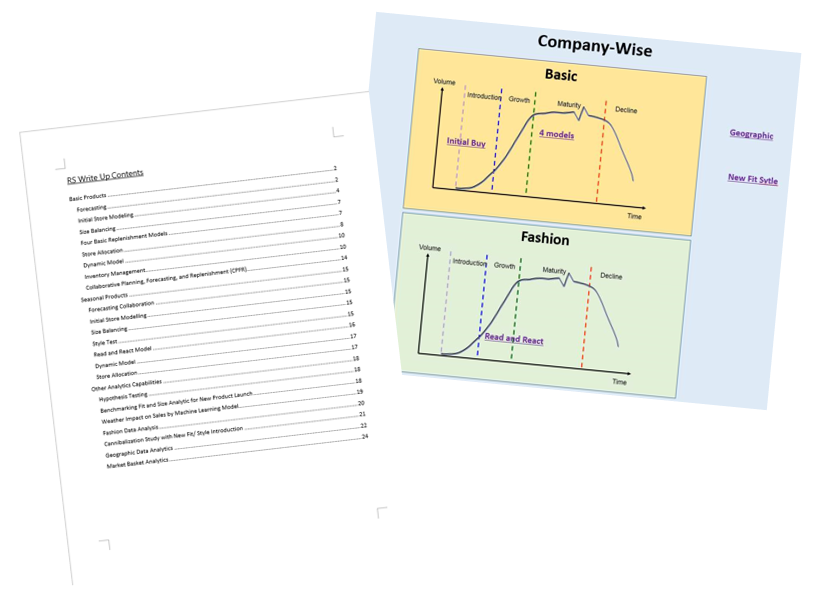
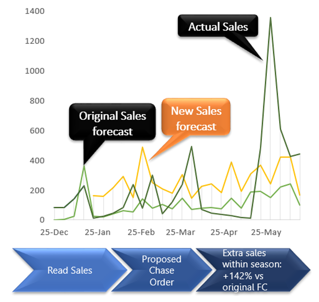

RS Write Up
By RS Department
Introduction

Leveraging the power of data, the Replenishment Solutions (RS) Department provides a large variety of services to our customers across a wide range of products from dress shirts, pants, suit to boxers.
Most of the time, we cooperate with SMM to see any opportunity chance to provide our service by identifying exiting to the styles that are long-running and with stable sales and we call them basic products. Apart from that, we also provide analytics services to products that have shorter life cycles and of the larger variety in styling. In the following, we will discuss our service in basic products, seasonal products, and other analytic capabilities respectively.
Contents
Fashion
Shorter Lifecycle
Basic
Long Lifecycle
Analytics
Power Tools
Fashion Replenishment
Read and React
Read and React model (i.e. in-season replenishment) allows flexibility for us to react according to the actual sales performance. Embracing the beauty of data-driven decision-making, the RS department has been continuously monitoring or "reading" sales data to "react" promptly. For instance, we accelerate the delivery of high-selling products or reducing (or shutting down) production of stalling products. In the following, we will take Chico's and Zachary Prell as examples to illustrate the concept of “Chase” of our level four (i.e. Store VMI) services:
Initial Store Modelling
For seasonal products, the logic of the initial store modeling is also similar to basic products’ ones. The major difference is the timeframe of the initial store model. With less variation and longer life cycles, the store model of basic products will be less likely to change. However seasonal products have a relatively shorter in-season stage in their life cycle and more variation in the products themselves, we need to monitor sales closely after setting up the initial model and evaluate any need to change the model and we called it a dynamic model. Therefore the initial model will be used in a shorter time compared with the one in the basic products.
Basic Replenishment
4 Basic Replenishment Models
To tailor-make replenishment models for each customer with diverse requirements, the Replenishment Solutions (RS) Department has provided four levels of replenishment model. As the level of replenishment model increases, the scope of the replenishment model increases, and our impact posed on customer’s business increases.
Store Allocation
Store allocation is another most commonly used concept in Store VMI. Inventory can then be allocated and fully utilized by using Efficient Frontier, Prioritization and Dynamic Model to optimize sales.